analog après-midi: japan_2
Tokyo tech in april #3
Tokyo tech, Ookayama
Ishikawadai campus, just south of my lab
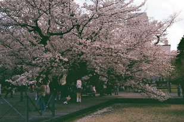Tokyo tech in april #2
Tokyo tech, Ookayama
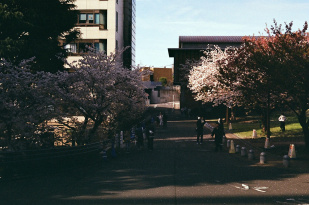Tokyo tech in april
Tokyo tech, Ookayama
My school campus when all the trees bloom
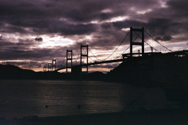Kurushima kaikyou no. 1
Ooshima
The final bridge to cross on the cycling route. Truly spectacular scenery, especially on the 360 degree curving roads up and down the bridge.
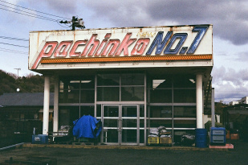pachinko no.1
Oomishima
West side of Oomishima, taken after visiting Ooyamazumi shrine and heading south to the coastline.
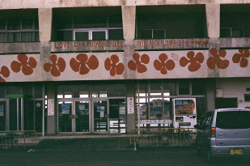love is a flower of soul
Oomishima
Close to the airbnb we stayed at (WAKKA, really nice place)
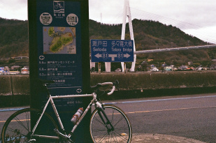En route
somewhere along the shimanami kaidou cycling route
My beloved bike!! I carried it on the shinkansen from tokyo to hiroshima -- so worth it. It's a 2008 lemond poprad rim brake CX-style bike that I bought second hand and upgraded several parts on.
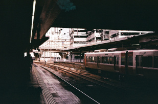hiroshima train
hiroshima station
From my hiroshima/onomichi-imabari shimanami kaido cycling trip with daniel & dicegang. they visited japan for seccon 2025, and did some tourism after. It was super fun!
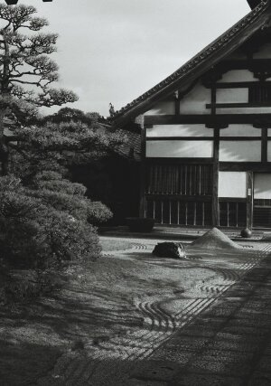Zen
Fukuoka
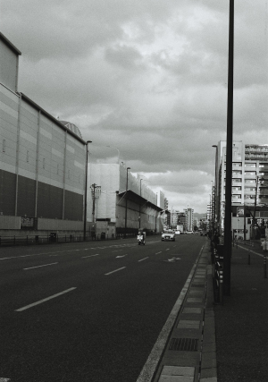Fukuoka coastline
Nagahama, fukuoka
Industrial area near the Fukuoka coast. Google maps suggests that the building on the left is a wholesale fish market. We came here looking for a famous hakata ramen shop, ganso nagahamaya. The ramen was excellent and shockingly cheap, highly recommend!!
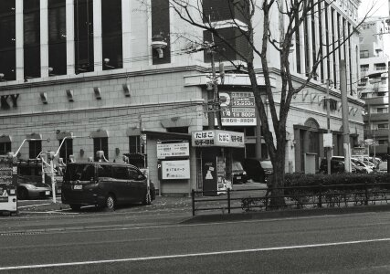Tobacco and stamps
Fukuoka
Not sure why this scene caught my eye, it just vaguely reminded me of atlanta somehow.
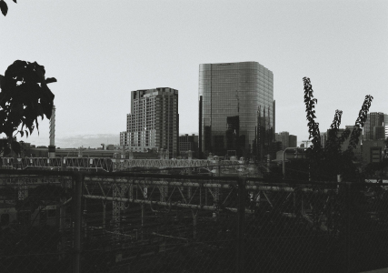東京総合車両センター
Ooimachi
I pass by this view every time I walk to and from the nearest train station, ooimachi. The yamanote line trains park here overnight.
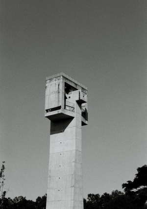Tsukuba, ibaraki
I visited the 2024 tsukuba university festival with an old friend who goes there. it was super fun! tsukuba is a highly planned city with some very nice parks, roads, interesting architecture. I took a lot of architecture photos when i was there, but I think this was the best one.
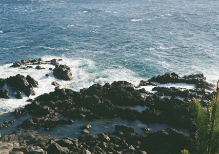southern tip of satsuma
Southern tip of kaimon-dake, ibusuki
Towards the end of a really cool climb down a cliff to reach a fishing/view spot (pictured). The climb is made easier by some thick ropes set up to help you down, but it's still somewhat thrilling.
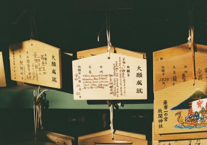大願
Hirakiki shrine, ibusuki, kagoshima
An ema the 5 of us wrote together, hanging in the shrine.
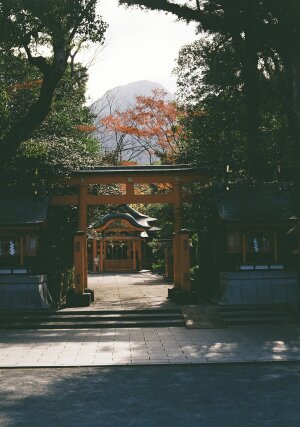satsuma no ichinomiya
hirakiki shrine, ibusuki
Hirakiki and Nitta shrines both claim to be the top ranked shrine in the Satsuma province, and while I can't really comment on Nitta, Hirakiki was very cool. The scenery with Kaimon-dake in the back was really nice.
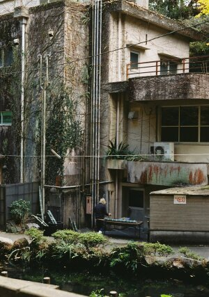soumen
ibusuki, kagoshima
Near the tousenkyou soumen nagashi spot. The food was unfortunately fairly mid in my opinion (so many bones in everything!), but the location and vibe is just spectacular. The fact that the restaurant is actually run by the city is also pretty peculiar. Here, a worker is preparing what seems to be bamboo tubes for the soumen to flow down (?).
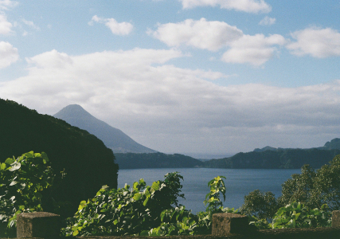kaimondake
ibusuki, kagoshima
Mt kaimon, on the very edge of the satsuma peninsula. I visited ibusuki with some friends I met while staying in hostels, one of whom had a rental car we all used to see ibusuki with high efficiency. Ibusuki ended up being one of my favorite days of the entire kyushu trip, it was so much fun car touring the countryside with an international group of friends
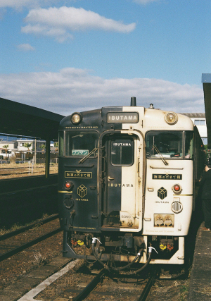Ibusuki no tamatebako
ibusuki, kagoshima
aforementioned limited express train. The white/gold side faces the ocean, and the black side faces inland on the trip to ibusuki.
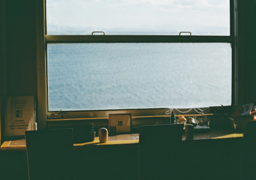umizoi christmas train
kagoshima
scene from inside the "ibusuki no tamatebako" limited express train from kagoshimachuou to ibusuki station. Another spectacular route along the ocean with great views of the kagoshima bay. The train was christmas themed when I went.
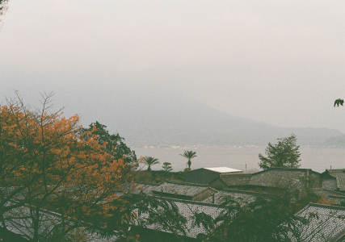hazy sakurajima
sengan-en, kagoshima
hazy outline of sakurajima in the bay as seen from sengan-en. The many views of sakurajima were some of my favorite moments of my time in kagoshima. the fact that a very active volcano is just sitting there in the middle of a huge population center and everyone's just gotten used to it is so crazy to me.
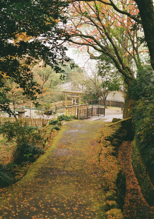senganen
sengan-en, kagoshima
new roll of film after i realized i underexposed the previous gold 200 roll by one stop :sob:. It turned out ok, there were some really moody shots in the last roll.
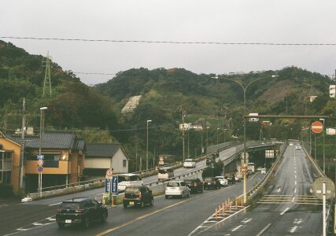road in kagoshima
kagoshima
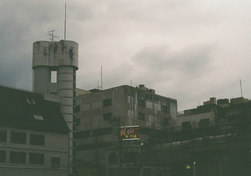grimy tenmonkan
tenmonkan, kagoshima
rainy day in tenmonkan. These buildings are behind the bus stop where the bus to sengan-en stops.
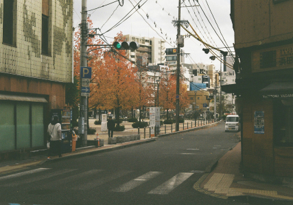tenmonkan park
tenmonkan, kagoshima
early morning. I love tenmonkan! it's completely crazy yet feels so cozy at the same time. A completely different nightlife feel compared to say, Nakasu in fukuoka.
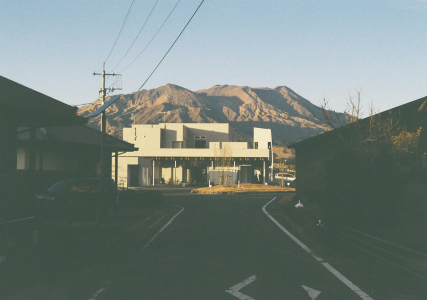takamori station at sunset
takamori station with mt aso peaks in the background. the only reason I was still in takamori by sunset is because I forgot my camera in the station... the minamiaso railway trains only run once every 2hrs so that ended up costing me 4+ hours
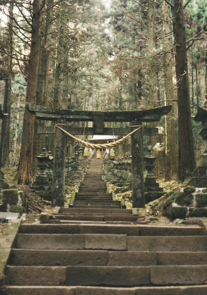kamishikimi
kamishikimikumanoza shrine
main entrance to the shrine
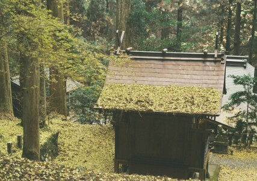fall, piled up
kamishikimikumanoza shrine
Cool shrine featured in hotarubi no mori e. unsurprisingly very heavily visited. my friend and and I climbed all the way up the hill behind the shrine and through a gnarly hiking/climbing trail (right past the do-not-enter sign)
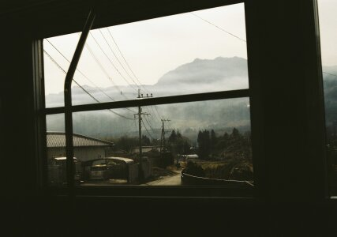foggy caldera
mt aso
photo taken from the window of the minamiaso railway. easily one of the most scenic train routes I've ever taken. It starts in tateno station and takes you into the Mt. Aso caldera to Takamori station. the pictured mountains are the southern rim of the caldera.
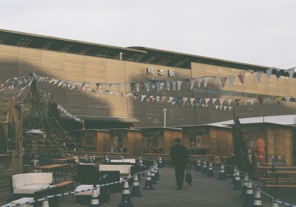kumamoto station
kumamoto
early morning while the 2024 december christmas market was setup
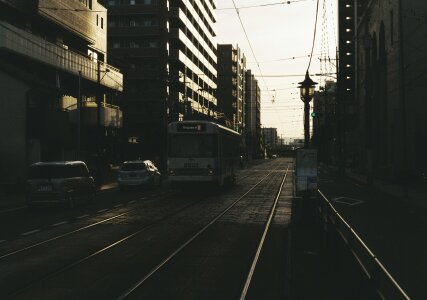kumamoto shiden
kumamoto
the absolutely awful kumamoto streetcar. miserable timings and miserable riding experience... gets so intensely crowded I'd rather walk 30m.
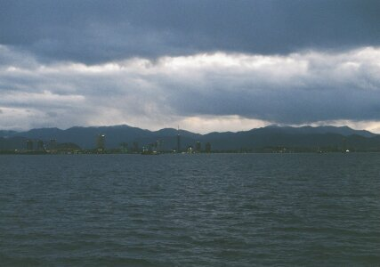fukuoka from the sea
fukuoka
fukuoka tower from the ferry from uminonakamichi to hakata. taken on my december 2024 kyushu trip with my georgia tech friend sidong.
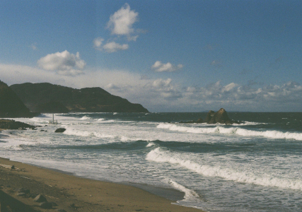married rocks
futamigaura, fukuoka
the married rocks and white torii near futamigaura. i have a bw photo of this as well, but I developed the color roll first.